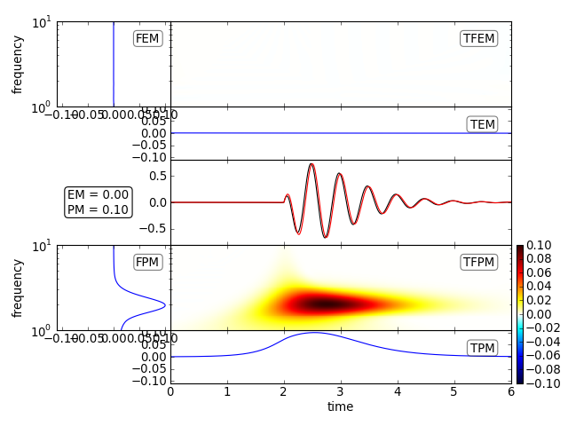

Plot all timefrequency misfits and the time series in one plot (per component).
| Parameters: |
|
|---|---|
| Returns: | If show is False, returns a maplotlib.pyplot.figure object (single component data) or a list of figure objects (multi component data) |
Example
For a signal with pure phase error
See also
[Kristekova2006], Fig.(4)
>>> import numpy as np
>>> from scipy.signal import hilbert
>>> tmax = 6.
>>> dt = 0.01
>>> npts = int(tmax / dt + 1)
>>> t = np.linspace(0., tmax, npts)
>>> A1 = 4.
>>> t1 = 2.
>>> f1 = 2.
>>> phi1 = 0.
>>> phase_shift = 0.1
>>> H1 = (np.sign(t - t1) + 1)/ 2
>>> st1 = (A1 * (t - t1) * np.exp(-2*(t - t1)) *
... np.cos(2. * np.pi * f1 * (t - t1) + phi1 * np.pi) * H1)
>>> # Reference signal
>>> st2 = st1.copy()
>>> # Distorted signal:
>>> # generate analytical signal (hilbert transform) and add phase shift
>>> st1 = hilbert(st1)
>>> st1 = np.real(np.abs(st1) * np.exp((np.angle(st1) +
... phase_shift * np.pi) * 1j))
>>> plotTfMisfits(st1, st2, dt=dt, fmin=1., fmax=10.)
